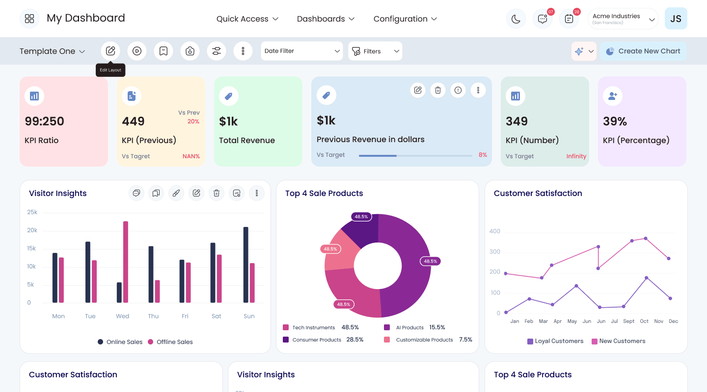
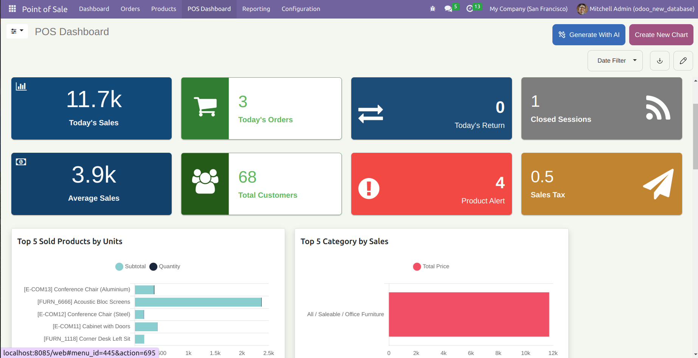

Every report was a weekly copy-paste marathon
Numbers lived in separate apps. Managers exported them to spreadsheets, built charts by hand and pasted screenshots into slides. Any change to a dashboard needed a developer.
Dashboard Ninja with AI
Businesses running on Odoo had all their numbers, just scattered across apps and spreadsheets. I designed Dashboard Ninja: AI builds the dashboard, explains why a number moved, and lets you present it live, without a developer.

AI-built dashboards and reusable building blocks took over most of the manual steps.
Setting up a dashboard went from hours of manual work to a few minutes.
Faster decisions, and fewer separate reporting tools to pay for and juggle.
Odoo runs sales, stock, accounting and more, but each part reports on its own. To see the whole picture, managers exported data into spreadsheets, built charts by hand and waited on developers for any change. Decisions slowed down.
Dashboard Ninja puts every key number on one live dashboard inside Odoo. AI builds the first draft and explains what changed in plain language, and anyone can add charts, save filters and present, without writing code.
This is the story of how business managers using Odoo stopped losing their afternoons to spreadsheets, and started getting answers, and the reasons behind them, in minutes.
Numbers lived in separate apps. Managers exported them to spreadsheets, built charts by hand and pasted screenshots into slides. Any change to a dashboard needed a developer.
The problem wasn't missing numbers. It was the slow road from a question to a chart they trusted and could explain to someone else.
Dashboard Ninja generates a full dashboard inside Odoo, explains why a number moved in plain language, and presents it live in the meeting.
Odoo is all-in-one business software that runs sales, stock, accounting, customer management and operations for thousands of companies. Each part comes with its own reports, which are useful on their own. But leaders need one picture of how the whole business is doing.
Using Odoo's default reports is like driving a car where every gauge sits in a different drawer. Dashboard Ninja puts all the gauges on one dashboard, and adds a co-pilot who can tell you why the needle moved.
Sales, stock and finance numbers live in separate menus, so comparing them means jumping between apps.
Each report answers the one question it was built for. Asking something new usually means exporting the data.
Teams copy numbers into sheets to combine and chart them, and those copies are out of date the moment they're made.
Anything beyond the defaults usually needs an Odoo developer or consultant, which slows every change down.
Neha runs operations and finance at a wholesale distributor. Every week she prepares the update for leadership, and every week it eats her Friday afternoon. Here's how it went.
Sales, margins and stock levels, all in one deck.
Then she re-applies the same filters she used last week, by hand.
She builds the charts herself and screenshots them into slides.
The chart shows what changed, but not the reason behind it.
The consultant can fit it in next week.
By Monday's meeting, the screenshots are already out of date.
An illustrative scenario, pieced together from what managers and consultants described in research.
Three roles shaped Dashboard Ninja: the manager who owns the numbers, the leader who reads them, and the consultant who sets them up.
Operations & Finance Manager
Wholesale distributor · 120 employees
I know the answer is somewhere in Odoo. I just don't have an afternoon to find it.
Sales Director
Same company · leadership team
Give me the three numbers that matter and tell me why they changed.
Odoo Functional Consultant
Implementation partner · 20+ clients
Every client wants a custom dashboard — and wants to change it next week.
Neha is the primary persona; Rohan and Aisha are secondary.
Neha didn't need more chart options. She needed a good first draft fast, and an explanation she could repeat to leadership.
Companies on Odoo had every number they needed, spread across separate apps, fixed reports and side spreadsheets. Getting one clear picture took hours, and decisions waited.
To answer one simple question, managers juggled sales, finance, stock and customer data across several tools. By the time the answer was ready, the moment to act on it had often passed.

How might we let any Odoo user go from a business question to a trusted, shareable dashboard in minutes, without a developer?
I wanted to find the exact moments where people gave up on Odoo's built-in reports and reached for a spreadsheet, and what would keep them inside instead.
The same workarounds came up in almost every conversation. Paraphrased from the interviews:
“I rebuild the same numbers in a spreadsheet every week.”
“To answer one question, I open three or four different apps.”
“Changing one chart means waiting for the consultant.”
“The chart shows the number dropped. It doesn't tell me why.”
“I set up the same filters by hand every single time.”
“Our reviews are screenshots pasted into slides.”
People didn't lack data. They lacked a fast path from a question to a chart they trusted, and could explain to someone else.
I compared the ways Odoo teams already got to their numbers. Each did part of the job well, but none combined building, explaining and presenting in one place.
| Approach | Good at | What's missing | Verdict |
|---|---|---|---|
| Odoo's built-in reportsBuilt-in | Reliable lists, tables and charts, one app at a time. | Dashboards that combine several apps. | Partial |
| Spreadsheet exportsManual | Flexible, familiar analysis. | Fresh data. Copies go stale and aren't shared consistently. | Fragile |
| Separate BI toolsExternal | Powerful charts. | Simplicity. They need connectors, setup and usually an analyst to maintain. | Separate |
| Custom-built dashboardsDeveloper | Exactly what was asked for. | Flexibility. Every change needs the developer again. | Slow to change |
| Dashboard NinjaThis project | Inside Odoo: AI-built dashboards, any chart, saved filters, AI explanations and presenting. | Nothing to set up. Dashboards in minutes. | Opportunity |
The gap was a reporting tool that lives inside Odoo, as easy as the built-in views and as flexible as an outside tool.
Each decision came from a research finding: a faster first dashboard, AI people can trust, and less repeated work. Here's what we noticed, what we could have done, and what we chose.
We noticed: a blank screen was where most people gave up. So one click asks AI to build a complete starting dashboard, and it fills in piece by piece so you can see it working instead of staring at a spinner.
We noticed: people wanted AI help, but on their terms. So “Explain with AI” sits on every chart, and asks first, since it takes a few minutes. Users decide when AI runs.
We noticed: people think “I want a bar chart”, not “I want to fill in a settings form”. So building a chart starts from a gallery of chart types with a live preview, and the data settings come after.
We noticed: the same filters were set up by hand every session. So filters can be combined with simple “where… is…” rules and saved as favourites, putting a weekly view one click away.
We noticed: reviews meant screenshots pasted into slides, out of date by the meeting. So a slideshow mode presents charts live with their AI explanation alongside, and charts can be shared straight into team conversations. Every screen comes in light and dark themes for long sessions.
Letting AI do the heavy lifting while keeping people firmly in charge. Every AI step had to be visible, optional and easy to edit afterwards.
Dashboard Ninja brings AI-built dashboards, easy chart building, saved filters and plain-language explanations into one place, right inside Odoo.
Sales, margins and stock are already on one screen, with her filters applied.
They appear on the dashboard, ready to move or tweak.
A plain-language summary shows what changed, where, and what to look at.
It goes straight into their team conversation, live rather than a screenshot.
The numbers are current, and the explanation is right beside each chart.
Ask AI to build dashboard items and get a full layout of key numbers and charts. You watch it fill in place, then rearrange, edit or delete anything.
Fixes“Changing one chart means waiting for the consultant.”
“Explain with AI” turns any chart into a plain-language summary: what changed, where, and what to do about it. A quick confirmation first keeps you in control.
Fixes“The chart shows the number dropped. It doesn't tell me why.”
Pick from bar, line, pie, doughnut, funnel, map, single-number tiles and more. Then choose the data, what to measure and how to group it, with a live preview alongside.
FixesFixed reports that can't answer new questions
Saved filters keep regular views one click away. Slideshow mode presents charts with their AI explanation, and charts can be shared straight into team conversations.
Fixes“Our reviews are screenshots pasted into slides.”
With AI handling the slow first step and the details left in people's hands, reporting stopped being a weekly chore.
AI-built dashboards and reusable building blocks took over most of the manual reporting steps.
Setting up a dashboard went from hours of manual work to a few minutes, thanks to AI and ready-made templates.
Faster decisions, and fewer separate reporting tools to pay for and juggle across teams.
Remember Neha? “I know the answer is somewhere in Odoo. I just don't have an afternoon to find it.” Now she doesn't need one.
Dashboard Ninja turned Odoo reporting from fixed, one-app-at-a-time views into something anyone on the team can shape. AI handles the slow first step, while the chart builder and filters keep people in control of the details.
People forgave an imperfect AI dashboard far more easily than an empty screen. A good starting point beats more options.
Asking before running an explanation made the feature feel trustworthy rather than pushy.
Dashboards get presented as often as they get read. Slideshow and sharing mattered as much as chart types.